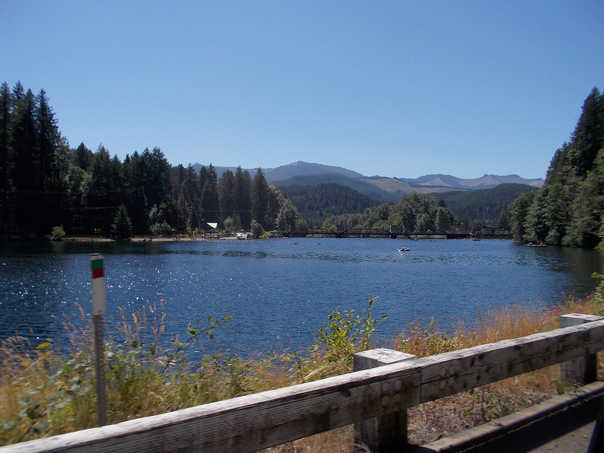
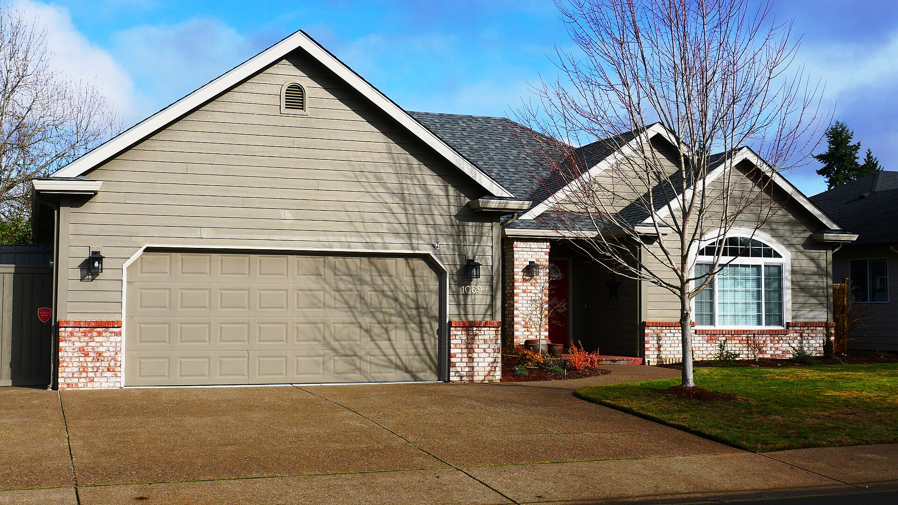
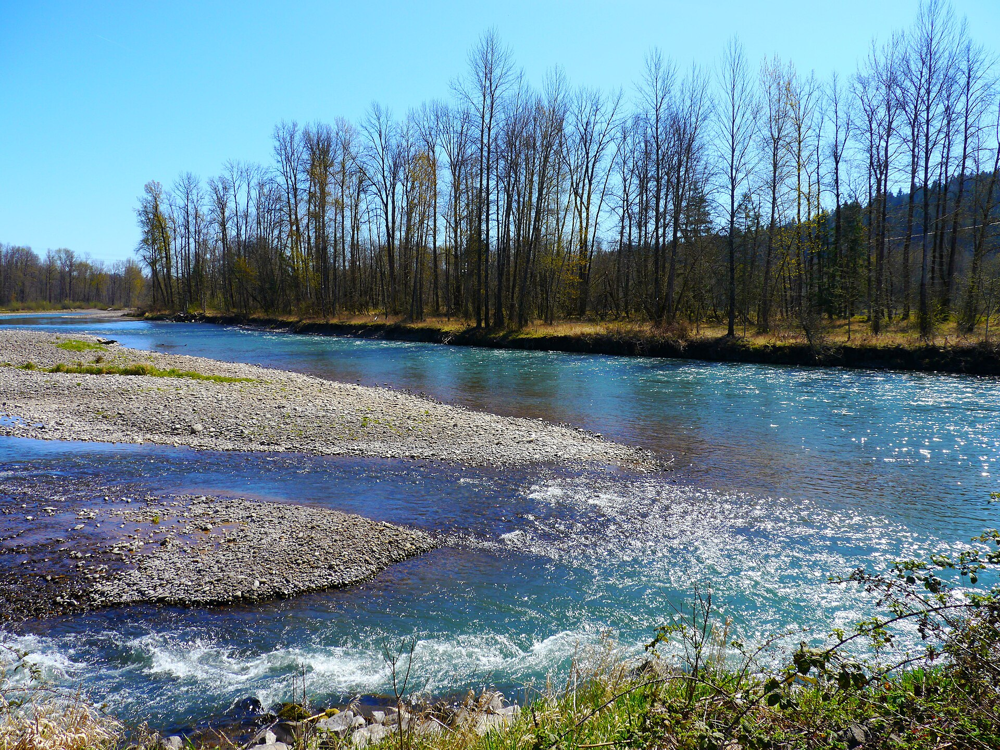

July 14, 2026
The 20% down payment myth has cost more people a house than any market ever has
Where the number came from, why it stuck, and what actually happens when you ask a lender.
Read →Things I keep explaining in person, written down so you can read them first.
July 14, 2026
Where the number came from, why it stuck, and what actually happens when you ask a lender.
Read →
July 7, 2026
A walkthrough of what I actually look at during a showing, and why none of it is the countertops.
Read →
June 23, 2026
More diligence, more moving parts, a buyer who might be three states away. Preparation is what keeps extra time from becoming extra problems.
Read →
June 9, 2026
Twelve years in, the honest list. Including the winter.
Read →May 26, 2026
Nobody hits a personal record on day one. Selling works the same way, and so does getting ready to buy.
Read →
May 12, 2026
How to separate the three findings that cost real money from the thirty that are normal.
Read →
April 28, 2026
Two cities sharing a border and a metro area, with genuinely different personalities.
Read →April 14, 2026
Feasibility before romance. What to verify before you buy bare land in Lane County.
Read →
March 31, 2026
Why the opening ten days on the market decide most of what happens afterward.
Read →
March 17, 2026
What to ask, what to test, and why rural systems are perfectly manageable once you understand them.
Read →Buying your first place, selling acreage out east, or landing here from out of state — start with a conversation. No pressure, no script, no disappearing act.
541-968-9422